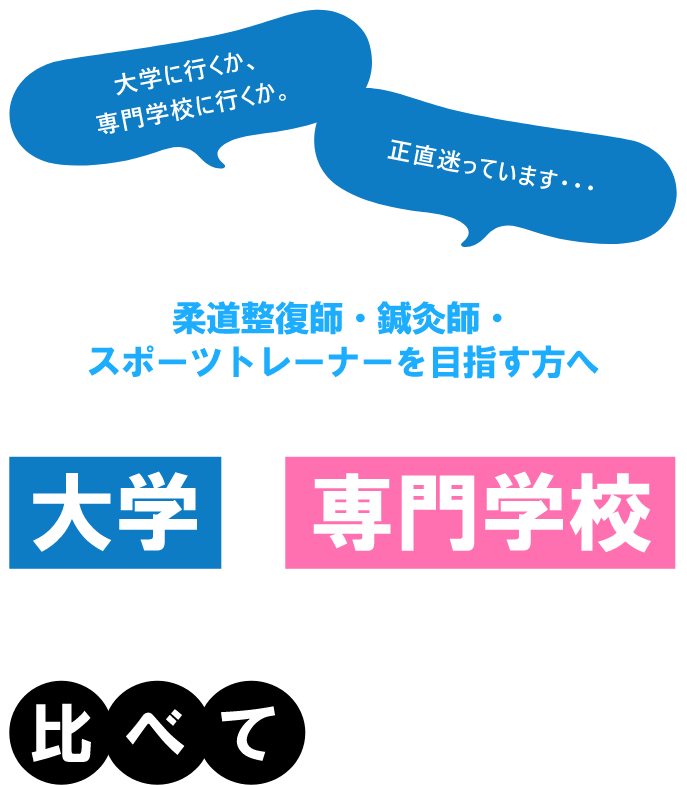
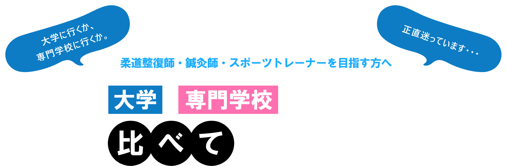
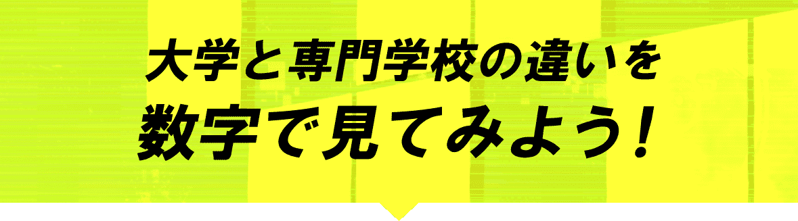
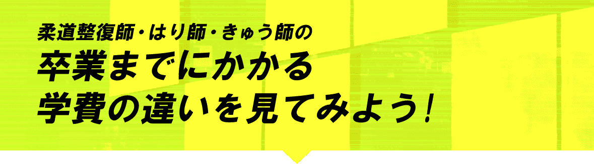
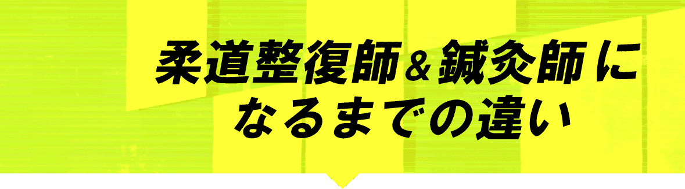

 

学習と就職について数字で比較
専門学校
就職率
在籍
年数
学費
H30学生・生徒納付金調査結果（専門課程）
就職率
在籍年数
学費
大学
就職率
在籍
年数
学費
H30学生・生徒納付金調査結果（専門課程）
| 専門学校 | 大学 | |
|---|---|---|
| カリキュラム | 特定の職業に 直結した 実践的な学び |
学術的・ 理論的な学問 ＋ 一般教養を 幅広く学ぶ |
| 適正 |
|
|
あなたはどちらのタイプ？
専門学校
- ・叶えたい夢が明確で専門知識が欲しい方向け
- ・専門的な知識・技術が必要
- ・最短で夢を叶えたい！
- ・最適なカリキュラムで効率よく学びたい
大学
- ・知識を深めて将来を考えたい方向け
- ・教養や学問研究が中心
- ・4年間でゆっくり将来を考えたい
-
・自主性をもって興味や関心、
自分の可能性を広げたい

専門学校
卒業までにかかる学費
柔道整復師
４５０万
はり師・きゅう師
４５０万
卒業までに
かかる学費
大学
卒業までにかかる学費
柔道整復師
７１０万
はり師・きゅう師
６００万
専門学校は、3年間で卒業できるため大学と比較して安いことがわかります。
ただ、それぞれにメリット・デメリットがあるので、自分はどっちに向いているのか よく考えてみましょう。

横にスクロールして見てみよう！
専門学校のメリット
最短距離で夢を叶える
一般教養含め幅広い分野を学ぶことができます。 入学後に自分にあった分野を見つけて進路決定・変更が できます。
大学のメリット
将来の選択肢を広げる
短期間で職業に直結する実践的な知識・スキルを身に つけて、自分の夢をいち早く叶えることができます。 大学に比べ学費も安く抑えることができます。
スポーツ健康医療専門学校のご紹介
スポ健５つの特色
高い合格率を誇る
国家試験合格サポート
担任制のため教員がしっかりと個々の苦手教科が 何かを把握し、アフターサポートをしています。 教員が親身になって相談にも乗ってくれるので 勉強以外の環境面も整っています。
現場で生かせる能力が
身につく充実した臨床実習
治療院(接骨院・鍼灸院)に限らず、 クリニックやスポーツ現場での実習もあり 将来の選択肢を広げることができます。 プロスポーツチームへの実習も可能です。
様々なテーマで開催！
各種セミナー
国内外で活躍する講師のセミナーを実施しています。将来の目標に有効な知識と技術をしっかりと身に付ける事が出来ます。
両学科を受講できる
Wスクール制度
最短3年で「柔道整復師・はり師・きゅう師」の 3つの国家資格が取得可能です。 免除制度もあるため、いち早く医療業界での 活躍が可能となります。 通常3つの国家資格を取得するには6-8年かかりますが、 同時受講することで期間が短くなります。
学費をサポートする
多種多様な免除制度
高校生向け・社会人向け・アスリート向けなど さまざまな免除制度を準備しています。 また、奨学金の借入も可能です。 学費を心配せず勉強に集中できる環境があります。